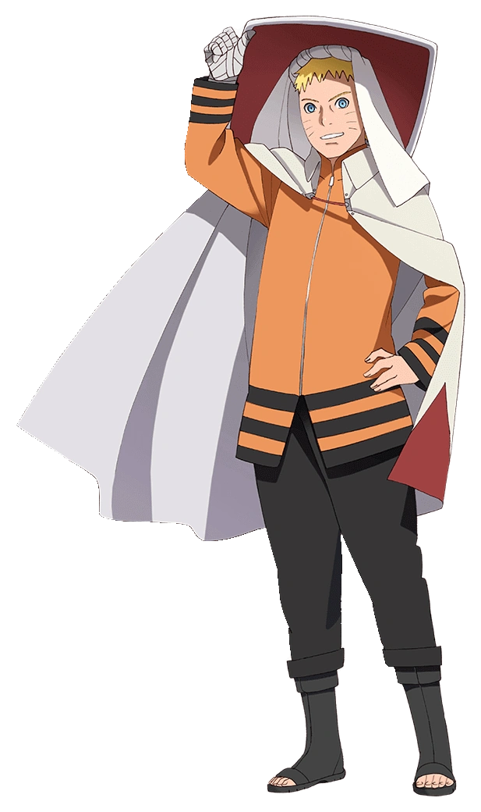

Naruto Uzumaki
Naruto Uzumaki is the titular protagonist of the manga Naruto, created by Masashi Kishimoto. He is a ninja from the fictional Hidden Leaf Village . As a boy, Naruto is ridiculed and ostracized on account of the Nine-Tailed Demon Fox—a malevolent creature that attacked Konohagakure—that was sealed away in his body. Despite this, he aspires to become his village's leader, the Hokage, in order to receive their approval. His carefree, optimistic, and boisterous personality enables him to befriend other Konohagakure ninja, as well as ninja from other villages.
